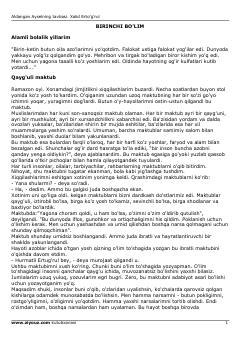

AAOg'ir taqdirga duch kelgan qizning hayotga qaytish va tavba qilish haqidagi ta'sirli qissasi.
Ushbu asar og'ir hayotiy sinovlarni boshidan kechirgan Aysel ismli qizning o'lim to'shagida yozgan maktubi asosida qurilgan. Kitob insonlarni o'zligini anglashga, hayot qadriga yetishga va jamiyatdagi illatlardan ogoh bo'lishga chorlaydi.